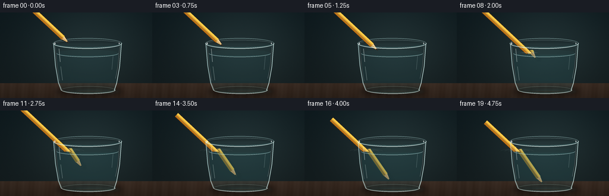
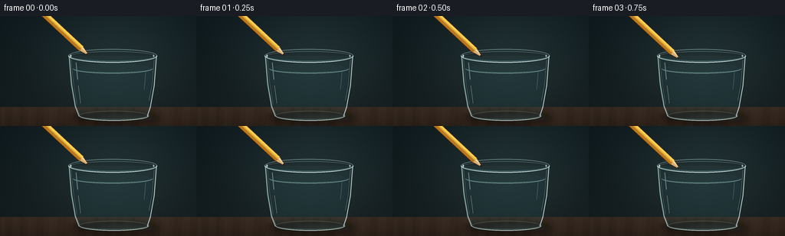

CODING AGENTS AS PIXEL WORLD MODELS
traex/GPT-5.6-Sol · phygen_073
点击播放 · 原生 RGB 像素
逐轮保存的候选
回放视频、检查图与代码变化。
每份候选均可单独播放。实际图片检查记录在下方工具轨迹中。
候选 01播放与检查图
点击播放 · 原生 RGB 像素


展开代码变化
--- 上一保存版本
+++ 本次保存版本
@@ -0,0 +1,243 @@
+from pathlib import Path
+import math
+import numpy as np
+from PIL import Image, ImageDraw, ImageFilter
+import artifact_io
+
+# Procedural RGB animation: no source imagery or learned assets.
+W, H, N = 256, 144, 20
+S = 4
+SW, SH = W*S, H*S
+rng = np.random.default_rng(7301)
+
+
+def sc(v):
+ return int(round(v*S))
+
+def pts(seq):
+ return [(sc(x), sc(y)) for x, y in seq]
+
+def rgba_layer():
+ return Image.new('RGBA', (SW, SH), (0, 0, 0, 0))
+
+def composite(base, layer):
+ return Image.alpha_composite(base, layer)
+
+def line(draw, xy, fill, width=1, joint='curve'):
+ draw.line(pts(xy), fill=fill, width=max(1, sc(width)), joint=joint)
+
+def ellipse(draw, box, fill=None, outline=None, width=1):
+ b = tuple(sc(v) for v in box)
+ draw.ellipse(b, fill=fill, outline=outline, width=max(1, sc(width)))
+
+def polygon(draw, xy, fill):
+ draw.polygon(pts(xy), fill=fill)
+
+
+def background(frame_i):
+ """Moody studio background and walnut tabletop with deterministic fine grain."""
+ yy, xx = np.mgrid[0:SH, 0:SW].astype(np.float32)
+ x = xx/S; y = yy/S
+ # soft teal charcoal backdrop, warmer near the glass
+ radial = np.exp(-(((x-151)/107)**2 + ((y-55)/82)**2))
+ top = np.clip(y/119.0, 0, 1)
+ arr = np.zeros((SH, SW, 4), dtype=np.float32)
+ arr[..., 0] = 12 + 18*radial + 5*top
+ arr[..., 1] = 23 + 23*radial + 2*top
+ arr[..., 2] = 27 + 22*radial
+ # tabletop starts behind the glass base
+ table = y >= 119
+ ty = np.clip((y-119)/25, 0, 1)
+ arr[..., 0] = np.where(table, 51 + 16*radial - 11*ty, arr[..., 0])
+ arr[..., 1] = np.where(table, 39 + 10*radial - 9*ty, arr[..., 1])
+ arr[..., 2] = np.where(table, 31 + 8*radial - 8*ty, arr[..., 2])
+ # horizontal wood grain and tiny photographic texture
+ grain = 2.0*np.sin(x*.30 + np.sin(x*.045)*2.3) + 0.9*np.sin(x*.91 + y*.08)
+ arr[..., :3] += grain[..., None] * table[..., None]
+ noise = rng.normal(0, .55, (SH, SW, 1))
+ arr[..., :3] += noise
+ arr[..., 3] = 255
+ return Image.fromarray(np.clip(arr, 0, 255).astype(np.uint8), 'RGBA')
+
+
+def soft_ellipse_shadow(box, color, blur):
+ lay = rgba_layer(); d = ImageDraw.Draw(lay)
+ ellipse(d, box, fill=color)
+ return lay.filter(ImageFilter.GaussianBlur(sc(blur)))
+
+
+def glass_back_and_water(base):
+ # Cast shadow and bright refracted caustic under the tumbler.
+ base = composite(base, soft_ellipse_shadow((92, 124, 207, 141), (0, 0, 0, 118), 4.5))
+ caustic = rgba_layer(); cd = ImageDraw.Draw(caustic)
+ ellipse(cd, (111, 128, 204, 138), fill=(86, 159, 158, 27))
+ ellipse(cd, (132, 130, 188, 135), fill=(185, 236, 220, 25))
+ caustic = caustic.filter(ImageFilter.GaussianBlur(sc(2.6)))
+ base = composite(base, caustic)
+
+ lay = rgba_layer(); d = ImageDraw.Draw(lay)
+ # nearly transparent glass body: just enough tonal lift to read its volume
+ polygon(d, [(90,52),(94,69),(99,116),(104,131),(111,135),(187,135),
+ (195,130),(200,70),(204,52)], (111, 183, 185, 12))
+ # rear outer lip and rear wall contours
+ d.arc(tuple(sc(v) for v in (89,43,205,61)), 181, 359, fill=(185,226,225,115), width=sc(1.1))
+ d.arc(tuple(sc(v) for v in (92,46,202,59)), 182, 358, fill=(215,246,243,70), width=sc(.7))
+ line(d, [(90,52),(94,92),(99,119),(104,130)], (186,226,226,65), 1.1)
+ line(d, [(204,52),(201,91),(196,119),(192,130)], (184,225,225,65), 1.1)
+ # Water body. Clear, with only a pale cyan tint.
+ polygon(d, [(95,68),(99,113),(104,129),(110,132),(188,132),(194,128),(199,68)],
+ (57, 135, 145, 28))
+ ellipse(d, (95,62.5,199,75), fill=(83, 165, 172, 23))
+ # faint bottom rear edge seen through water
+ d.arc(tuple(sc(v) for v in (103,124,194,137)), 180, 359, fill=(155,216,213,75), width=sc(.8))
+ return composite(base, lay)
+
+
+def pencil_layer(start, end, width=7.4, underwater=False):
+ """Draw a complete lacquered hexagonal pencil, including sharpened wooden point."""
+ x0,y0 = start; x1,y1 = end
+ vx,vy = x1-x0,y1-y0
+ L = max(1e-6, math.hypot(vx,vy)); ux,uy=vx/L,vy/L; nx,ny=-uy,ux
+ w=width/2
+ wood_len=min(13.5, L*.42); graphite_len=min(4.2, wood_len*.36)
+ bx=x1-ux*wood_len; by=y1-uy*wood_len
+ gx=x1-ux*graphite_len; gy=y1-uy*graphite_len
+ lay=rgba_layer(); d=ImageDraw.Draw(lay)
+ if underwater:
+ outline=(30,68,65,180); dark=(123,104,45,235); mid=(198,159,58,235); light=(225,194,84,225)
+ wood=(170,141,93,235); wood_hi=(200,173,121,225); graphite=(32,47,43,240)
+ else:
+ outline=(72,44,19,255); dark=(190,117,25,255); mid=(238,169,43,255); light=(255,208,78,255)
+ wood=(216,176,112,255); wood_hi=(245,213,154,255); graphite=(36,31,27,255)
+ # subtle directional shadow on the dry pencil
+ if not underwater:
+ polygon(d, [(x0+nx*w+1.2,y0+ny*w+1.3),(bx+nx*w+1.2,by+ny*w+1.3),
+ (bx-nx*w+1.2,by-ny*w+1.3),(x0-nx*w+1.2,y0-ny*w+1.3)], (0,0,0,70))
+ # outlined body and its three visible facets
+ polygon(d, [(x0+nx*(w+.65),y0+ny*(w+.65)),(bx+nx*(w+.65),by+ny*(w+.65)),
+ (bx-nx*(w+.65),by-ny*(w+.65)),(x0-nx*(w+.65),y0-ny*(w+.65))], outline)
+ polygon(d, [(x0+nx*w,y0+ny*w),(bx+nx*w,by+ny*w),(bx+nx*.55,by+ny*.55),
+ (x0+nx*.55,y0+ny*.55)], dark)
+ polygon(d, [(x0+nx*.55,y0+ny*.55),(bx+nx*.55,by+ny*.55),(bx-nx*1.4,by-ny*1.4),
+ (x0-nx*1.4,y0-ny*1.4)], mid)
+ polygon(d, [(x0-nx*1.4,y0-ny*1.4),(bx-nx*1.4,by-ny*1.4),(bx-nx*w,by-ny*w),
+ (x0-nx*w,y0-ny*w)], light)
+ line(d, [(x0+nx*.45,y0+ny*.45),(bx+nx*.45,by+ny*.45)], (255,232,137,145) if not underwater else (228,211,137,100), .55)
+ # sharpened wood cone with a highlight facet
+ polygon(d, [(bx+nx*w,by+ny*w),(x1,y1),(bx-nx*w,by-ny*w)], outline)
+ polygon(d, [(bx+nx*(w-.55),by+ny*(w-.55)),(gx+nx*.8,gy+ny*.8),(x1,y1),(bx-nx*(w-.55),by-ny*(w-.55))], wood)
+ polygon(d, [(bx-nx*(w-.55),by-ny*(w-.55)),(x1,y1),(gx-nx*.75,gy-ny*.75),(bx-nx*.7,by-ny*.7)], wood_hi)
+ polygon(d, [(gx+nx*.9,gy+ny*.9),(x1,y1),(gx-nx*.9,gy-ny*.9)], graphite)
+ return lay
+
+
+def clip_layer(layer, kind):
+ mask=Image.new('L',(SW,SH),0); d=ImageDraw.Draw(mask)
+ if kind=='above':
+ d.rectangle((0,0,SW,sc(69.0)),fill=255)
+ else:
+ # Inner water volume, curved base and top. This keeps the pencil behind glass walls.
+ polygon(d, [(95,68),(98,106),(103,128),(110,133),(188,133),(194,128),(199,68)], 255)
+ ellipse(d,(95,62.5,199,75),fill=255)
+ d.rectangle((sc(95),sc(68),sc(199),sc(71)),fill=255)
+ a=np.asarray(layer.getchannel('A'),dtype=np.uint16)
+ m=np.asarray(mask,dtype=np.uint16)
+ layer.putalpha(Image.fromarray(((a*m)//255).astype(np.uint8),'L'))
+ return layer
+
+
+def overlay_optics(base, entry_x, depth, phase):
+ lay=rgba_layer(); d=ImageDraw.Draw(lay)
+ # Front half of waterline: narrow double highlight emphasizes the interface.
+ d.arc(tuple(sc(v) for v in (95,62.5,199,75)), 2, 178, fill=(217,248,244,150), width=sc(.85))
+ d.arc(tuple(sc(v) for v in (97,65,197,73.7)), 4, 176, fill=(71,138,143,105), width=sc(.65))
+ # Contact ripples appear only once the tip breaks the surface.
+ if depth > 0.3:
+ age=min(1.0, depth/22.0)
+ for k in range(3):
+ r=4.0 + age*(10+7*k)
+ alpha=int((1-age*.55)*(88-19*k))
+ box=(entry_x-r, 68.7-r*.16, entry_x+r, 68.7+r*.16)
+ d.arc(tuple(sc(v) for v in box), 186, 354, fill=(221,250,245,alpha), width=sc(.6))
+ ellipse(d,(entry_x-1.8,67.8,entry_x+1.8,70.0),outline=(235,255,250,115),width=.5)
+ # front glass walls, specular streaks, foot and base thickness
+ line(d,[(90,52),(93,89),(98,118),(103,131)],(203,239,237,155),1.15)
+ line(d,[(92,54),(96,91),(100,115)],(255,255,248,72),.55)
+ line(d,[(204,52),(201,91),(196,119),(192,131)],(214,244,241,170),1.2)
+ line(d,[(201,57),(198,91),(194,111)],(255,255,251,85),.55)
+ # bright vertical reflection on the left, broken naturally by perspective
+ line(d,[(99,61),(101,83)],(244,255,250,105),1.05)
+ line(d,[(102,91),(105,114)],(238,255,251,85),.75)
+ line(d,[(190,73),(188,96)],(230,255,251,52),.65)
+ # bottom lens and front rim
+ d.arc(tuple(sc(v) for v in (103,124,194,137)), 0, 180, fill=(226,250,246,170), width=sc(1.15))
+ d.arc(tuple(sc(v) for v in (106,127,191,135)), 0, 180, fill=(88,161,163,95), width=sc(.7))
+ # full outer front top rim
+ d.arc(tuple(sc(v) for v in (89,43,205,61)), 0, 180, fill=(230,252,248,195), width=sc(1.25))
+ d.arc(tuple(sc(v) for v in (92,46,202,59)), 2, 178, fill=(111,181,183,118), width=sc(.65))
+ # pinpoint glints
+ ellipse(d,(91.2,50.2,93.1,54.1),fill=(255,255,255,180))
+ ellipse(d,(199.5,50.5,201.1,53.5),fill=(255,255,255,145))
+ return composite(base,lay)
+
+
+def make_frame(i):
+ t=i/(N-1)
+ ease=t*t*(3-2*t)
+ # Pencil translates slowly downward and right; a slight settling pause at the end.
+ tip=(116+44*ease, 52+72*ease)
+ axis=(0.730,0.6834)
+ tail=(tip[0]-axis[0]*153,tip[1]-axis[1]*153)
+ base=background(i)
+ base=glass_back_and_water(base)
+
+ water_y=69.0
+ depth=max(0.0,tip[1]-water_y)
+ if depth>0:
+ # Physical crossing point, then optical lateral jump + shallower apparent angle.
+ physical_x=tip[0]-(tip[1]-water_y)*(axis[0]/axis[1])
+ entry_x=physical_x
+ apparent_start=(physical_x+5.0,water_y-1.0)
+ apparent_tip=(apparent_start[0]+0.71*depth, tip[1])
+ app_axis=(apparent_tip[0]-apparent_start[0],apparent_tip[1]-apparent_start[1])
+ app_len=math.hypot(*app_axis)
+ au=(app_axis[0]/app_len,app_axis[1]/app_len)
+ app_tail=(apparent_tip[0]-au[0]*153,apparent_tip[1]-au[1]*153)
+ under=clip_layer(pencil_layer(app_tail,apparent_tip,7.7,True),'under')
+ base=composite(base,under)
+ # moving soft shadow/reflection of the submerged shaft to sell depth
+ refl=rgba_layer(); rd=ImageDraw.Draw(refl)
+ line(rd,[(apparent_start[0]+6,70.5),(apparent_tip[0]+5,apparent_tip[1]+1)],(9,54,58,35),4.8)
+ refl=clip_layer(refl.filter(ImageFilter.GaussianBlur(sc(2.1))),'under')
+ base=composite(base,refl)
+ else:
+ entry_x=tip[0]
+
+ # Dry/above-water pencil uses the true straight geometry and is clipped at interface.
+ dry=clip_layer(pencil_layer(tail,tip,7.5,False),'above')
+ base=composite(base,dry)
+
+ # Pale water veil over submerged pencil simulates scattering without clouding clarity.
+ if depth>0:
+ veil=rgba_layer(); vd=ImageDraw.Draw(veil)
+ polygon(vd,[(96,70),(99,111),(105,130),(111,132),(188,132),(194,127),(198,70)],(68,153,161,10))
+ base=composite(base,veil)
+
+ base=overlay_optics(base,entry_x,depth,i)
+ # Downsample gives clean anti-aliasing and a photographic softness.
+ rgb=base.convert('RGB').resize((W,H),Image.Resampling.LANCZOS)
+ arr=np.asarray(rgb,dtype=np.uint8)
+ return arr
+
+
+def main():
+ # reset deterministic texture stream on each invocation
+ global rng
+ rng=np.random.default_rng(7301)
+ frames=np.stack([make_frame(i) for i in range(N)],axis=0)
+ case_dir=Path(__file__).resolve().parent
+ artifact_io.save(frames,case_dir)
+ print(f'saved {frames.shape} RGB frames to {case_dir}')
+
+if __name__=='__main__':
+ main()
可观测工具轨迹
实际执行的命令与返回图片。
命令 1exit 0
/bin/bash -lc "cat prompt.txt && printf '\\n--- GENERATION_RULES.md ---\\n' && cat GENERATION_RULES.md"
命令 2exit 0
/bin/bash -lc "cat task_spec.json && printf '\\n--- FILES ---\\n' && find . -maxdepth 2 -type f -printf '%p\\n' | sort"
命令 3exit 0
/bin/bash -lc "command -v ffmpeg; command -v blender; command -v python3; python3 - <<'PY' mods=['numpy','PIL','cv2','imageio','moviepy','moderngl'] for m in mods: try: x=__import__(m); print(m,'OK',getattr(x,'__version__','')) except Exception as e: print(m,'NO',e) PY"
命令 4exit 0
/bin/bash -lc 'cat artifact_io.py'
命令 5exit 2
/bin/bash -lc "cat > generate.py <<'PY'
from pathlib import Path
import math
import numpy as np
from PIL import Image, ImageDraw, ImageFilter
import artifact_io
# Procedural RGB animation: no source imagery or learned assets.
W, H, N = 256, 144, 20
S = 4
SW, SH = W*S, H*S
rng = np.random.default_rng(7301)
def sc(v):
return int(round(v*S))
def pts(seq):
return [(sc(x), sc(y)) for x, y in seq]
def rgba_layer():
return Image.new('RGBA', (SW, SH), (0, 0, 0, 0))
def composite(base, layer):
return Image.alpha_composite(base, layer)
def line(draw, xy, fill, width=1, joint='curve'):
draw.line(pts(xy), fill=fill, width=max(1, sc(width)), joint=joint)
def ellipse(draw, box, fill=None, outline=None, width=1):
b = tuple(sc(v) for v in box)
draw.ellipse(b, fill=fill, outline=outline, width=max(1, sc(width)))
def polygon(draw, xy, fill):
draw.polygon(pts(xy), fill=fill)
def background(frame_i):
\"\"\"Moody studio background and walnut tabletop with deterministic fine grain.\"\"\"
yy, xx = np.mgrid[0:SH, 0:SW].astype(np.float32)
x = xx/S; y = yy/S
# soft teal charcoal backdrop, warmer near the glass
radial = np.exp(-(((x-151)/107)**2 + ((y-55)/82)**2))
top = np.clip(y/119.0, 0, 1)
arr = np.zeros((SH, SW, 4), dtype=np.float32)
arr[..., 0] = 12 + 18*radial + 5*top
arr[..., 1] = 23 + 23*radial + 2*top
arr[..., 2] = 27 + 22*radial
# tabletop starts behind the glass base
table = y >= 119
ty = np.clip((y-119)/25, 0, 1)
arr[..., 0] = np.where(table, 51 + 16*radial - 11*ty, arr[..., 0])
arr[..., 1] = np.where(table, 39 + 10*radial - 9*ty, arr[..., 1])
arr[..., 2] = np.where(table, 31 + 8*radial - 8*ty, arr[..., 2])
# horizontal wood grain and tiny photographic texture
grain = 2.0*np.sin(x*.30 + np.sin(x*.045)*2.3) + 0.9*np.sin(x*.91 + y*.08)
arr[..., :3] += grain[..., None] * table[..., None]
noise = rng.normal(0, .55, (SH, SW, 1))
arr[..., :3] += noise
arr[..., 3] = 255
return Image.fromarray(np.clip(arr, 0, 255).astype(np.uint8), 'RGBA')
def soft_ellipse_shadow(box, color, blur):
lay = rgba_layer(); d = ImageDraw.Draw(lay)
ellipse(d, box, fill=color)
return lay.filter(ImageFilter.GaussianBlur(sc(blur)))
def glass_back_and_water(base):
# Cast shadow and bright refracted caustic under the tumbler.
base = composite(base, soft_ellipse_shadow((92, 124, 207, 141), (0, 0, 0, 118), 4.5))
caustic = rgba_layer(); cd = ImageDraw.Draw(caustic)
ellipse(cd, (111, 128, 204, 138), fill=(86, 159, 158, 27))
ellipse(cd, (132, 130, 188, 135), fill=(185, 236, 220, 25))
caustic = caustic.filter(ImageFilter.GaussianBlur(sc(2.6)))
base = composite(base, caustic)
lay = rgba_layer(); d = ImageDraw.Draw(lay)
# nearly transparent glass body: just enough tonal lift to read its volume
polygon(d, [(90,52),(94,69),(99,116),(104,131),(111,135),(187,135),
(195,130),(200,70),(204,52)], (111, 183, 185, 12))
# rear outer lip and rear wall contours
d.arc(tuple(sc(v) for v in (89,43,205,61)), 181, 359, fill=(185,226,225,115), width=sc(1.1))
d.arc(tuple(sc(v) for v in (92,46,202,59)), 182, 358, fill=(215,246,243,70), width=sc(.7))
line(d, [(90,52),(94,92),(99,119),(104,130)], (186,226,226,65), 1.1)
line(d, [(204,52),(201,91),(196,119),(192,130)], (184,225,225,65), 1.1)
# Water body. Clear, with only a pale cyan tint.
polygon(d, [(95,68),(99,113),(104,129),(110,132),(188,132),(194,128),(199,68)],
(57, 135, 145, 28))
ellipse(d, (95,62.5,199,75), fill=(83, 165, 172, 23))
# faint bottom rear edge seen through water
d.arc(tuple(sc(v) for v in (103,124,194,137)), 180, 359, fill=(155,216,213,75), width=sc(.8))
return composite(base, lay)
def pencil_layer(start, end, width=7.4, underwater=False):
\"\"\"Draw a complete lacquered hexagonal pencil, including sharpened wooden point.\"\"\"
x0,y0 = start; x1,y1 = end
vx,vy = x1-x0,y1-y0
L = max(1e-6, math.hypot(vx,vy)); ux,uy=vx/L,vy/L; nx,ny=-uy,ux
w=width/2
wood_len=min(13.5, L*.42); graphite_len=min(4.2, wood_len*.36)
bx=x1-ux*wood_len; by=y1-uy*wood_len
gx=x1-ux*graphite_len; gy=y1-uy*graphite_len
lay=rgba_layer(); d=ImageDraw.Draw(lay)
if underwater:
outline=(30,68,65,180); dark=(123,104,45,235); mid=(198,159,58,235); light=(225,194,84,225)
wood=(170,141,93,235); wood_hi=(200,173,121,225); graphite=(32,47,43,240)
else:
outline=(72,44,19,255); dark=(190,117,25,255); mid=(238,169,43,255); light=(255,208,78,255)
wood=(216,176,112,255); wood_hi=(245,213,154,255); graphite=(36,31,27,255)
# subtle directional shadow on the dry pencil
if not underwater:
polygon(d, [(x0+nx*w+1.2,y0+ny*w+1.3),(bx+nx*w+1.2,by+ny*w+1.3),
(bx-nx*w+1.2,by-ny*w+1.3),(x0-nx*w+1.2,y0-ny*w+1.3)], (0,0,0,70))
# outlined body and its three visible facets
polygon(d, [(x0+nx*(w+.65),y0+ny*(w+.65)),(bx+nx*(w+.65),by+ny*(w+.65)),
(bx-nx*(w+.65),by-ny*(w+.65)),(x0-nx*(w+.65),y0-ny*(w+.65))], outline)
polygon(d, [(x0+nx*w,y0+ny*w),(bx+nx*w,by+ny*w),(bx+nx*.55,by+ny*.55),
(x0+nx*.55,y0+ny*.55)], dark)
polygon(d, [(x0+nx*.55,y0+ny*.55),(bx+nx*.55,by+ny*.55),(bx-nx*1.4,by-ny*1.4),
(x0-nx*1.4,y0-ny*1.4)], mid)
polygon(d, [(x0-nx*1.4,y0-ny*1.4),(bx-nx*1.4,by-ny*1.4),(bx-nx*w,by-ny*w),
(x0-nx*w,y0-ny*w)], light)
line(d, [(x0+nx*.45,y0+ny*.45),(bx+nx*.45,by+ny*.45)], (255,232,137,145) if not underwater else (228,211,137,100), .55)
# sharpened wood cone with a highlight facet
polygon(d, [(bx+nx*w,by+ny*w),(x1,y1),(bx-nx*w,by-ny*w)], outline)
polygon(d, [(bx+nx*(w-.55),by+ny*(w-.55)),(gx+nx*.8,gy+ny*.8),(x1,y1),(bx-nx*(w-.55),by-ny*(w-.55))], wood)
polygon(d, [(bx-nx*(w-.55),by-ny*(w-.55)),(x1,y1),(gx-nx*.75,gy-ny*.75),(bx-nx*.7,by-ny*.7)], wood_hi)
polygon(d, [(gx+nx*.9,gy+ny*.9),(x1,y1),(gx-nx*.9,gy-ny*.9)], graphite)
return lay
def clip_layer(layer, kind):
mask=Image.new('L',(SW,SH),0); d=ImageDraw.Draw(mask)
if kind=='above':
d.rectangle((0,0,SW,sc(69.0)),fill=255)
else:
# Inner water volume, curved base and top. This keeps the pencil behind glass walls.
polygon(d, [(95,68),(98,106),(103,128),(110,133),(188,133),(194,128),(199,68)], 255)
ellipse(d,(95,62.5,199,75),fill=255)
d.rectangle((sc(95),sc(68)),(sc(199),sc(71)),fill=255)
a=np.asarray(layer.getchannel('A'),dtype=np.uint16)
m=np.asarray(mask,dtype=np.uint16)
layer.putalpha(Image.fromarray(((a*m)//255).astype(np.uint8),'L'))
return layer
def overlay_optics(base, entry_x, depth, phase):
lay=rgba_layer(); d=ImageDraw.Draw(lay)
# Front half of waterline: narrow double highlight emphasizes the interface.
d.arc(tuple(sc(v) for v in (95,62.5,199,75)), 2, 178, fill=(217,248,244,150), width=sc(.85))
d.arc(tuple(sc(v) for v in (97,65,197,73.7)), 4, 176, fill=(71,138,143,105), width=sc(.65))
# Contact ripples appear only once the tip breaks the surface.
if depth > 0.3:
age=min(1.0, depth/22.0)
for k in range(3):
r=4.0 + age*(10+7*k)
alpha=int((1-age*.55)*(88-19*k))
box=(entry_x-r, 68.7-r*.16, entry_x+r, 68.7+r*.16)
d.arc(tuple(sc(v) for v in box), 186, 354, fill=(221,250,245,alpha), width=sc(.6))
ellipse(d,(entry_x-1.8,67.8,entry_x+1.8,70.0),outline=(235,255,250,115),width=.5)
# front glass walls, specular streaks, foot and base thickness
line(d,[(90,52),(93,89),(98,118),(103,131)],(203,239,237,155),1.15)
line(d,[(92,54),(96,91),(100,115)],(255,255,248,72),.55)
line(d,[(204,52),(201,91),(196,119),(192,131)],(214,244,241,170),1.2)
line(d,[(201,57),(198,91),(194,111)],(255,255,251,85),.55)
# bright vertical reflection on the left, broken naturally by perspective
line(d,[(99,61),(101,83)],(244,255,250,105),1.05)
line(d,[(102,91),(105,114)],(238,255,251,85),.75)
line(d,[(190,73),(188,96)],(230,255,251,52),.65)
# bottom lens and front rim
d.arc(tuple(sc(v) for v in (103,124,194,137)), 0, 180, fill=(226,250,246,170), width=sc(1.15))
d.arc(tuple(sc(v) for v in (106,127,191,135)), 0, 180, fill=(88,161,163,95), width=sc(.7))
# full outer front top rim
d.arc(tuple(sc(v) for v in (89,43,205,61)), 0, 180, fill=(230,252,248,195), width=sc(1.25))
d.arc(tuple(sc(v) for v in (92,46,202,59)), 2, 178, fill=(111,181,183,118), width=sc(.65))
# pinpoint glints
ellipse(d,(91.2,50.2,93.1,54.1),fill=(255,255,255,180))
ellipse(d,(199.5,50.5,201.1,53.5),fill=(255,255,255,145))
return composite(base,lay)
def make_frame(i):
t=i/(N-1)
ease=t*t*(3-2*t)
# Pencil translates slowly downward and right; a slight settling pause at the end.
tip=(116+44*ease, 52+72*ease)
axis=(0.730,0.6834)
tail=(tip[0]-axis[0]*153,tip[1]-axis[1]*153)
base=background(i)
base=glass_back_and_water(base)
water_y=69.0
depth=max(0.0,tip[1]-water_y)
if depth>0:
# Physical crossing point, then optical lateral jump + shallower apparent angle.
physical_x=tip[0]-(tip[1]-water_y)*(axis[0]/axis[1])
entry_x=physical_x
apparent_start=(physical_x+5.0,water_y-1.0)
apparent_tip=(apparent_start[0]+0.71*depth, tip[1])
app_axis=(apparent_tip[0]-apparent_start[0],apparent_tip[1]-apparent_start[1])
app_len=math.hypot(*app_axis)
au=(app_axis[0]/app_len,app_axis[1]/app_len)
app_tail=(apparent_tip[0]-au[0]*153,apparent_tip[1]-au[1]*153)
under=clip_layer(pencil_layer(app_tail,apparent_tip,7.7,True),'under')
base=composite(base,under)
# moving soft shadow/reflection of the submerged shaft to sell depth
refl=rgba_layer(); rd=ImageDraw.Draw(refl)
line(rd,[(apparent_start[0]+6,70.5),(apparent_tip[0]+5,apparent_tip[1]+1)],(9,54,58,35),4.8)
refl=clip_layer(refl.filter(ImageFilter.GaussianBlur(sc(2.1))),'under')
base=composite(base,refl)
else:
entry_x=tip[0]
# Dry/above-water pencil uses the true straight geometry and is clipped at interface.
dry=clip_layer(pencil_layer(tail,tip,7.5,False),'above')
base=composite(base,dry)
# Pale water veil over submerged pencil simulates scattering without clouding clarity.
if depth>0:
veil=rgba_layer(); vd=ImageDraw.Draw(veil)
polygon(vd,[(96,70),(99,111),(105,130),(111,132),(188,132),(194,127),(198,70)],(68,153,161,10))
base=composite(base,veil)
base=overlay_optics(base,entry_x,depth,i)
# Downsample gives clean anti-aliasing and a photographic softness.
rgb=base.convert('RGB').resize((W,H),Image.Resampling.LANCZOS)
arr=np.asarray(rgb,dtype=np.uint8)
return arr
def main():
# reset deterministic texture stream on each invocation
global rng
rng=np.random.default_rng(7301)
frames=np.stack([make_frame(i) for i in range(N)],axis=0)
case_dir=Path(__file__).resolve().parent
artifact_io.save(frames,case_dir)
print(f'saved {frames.shape} RGB frames to {case_dir}')
if __name__=='__main__':
main()
PY
python3 generate.py
ls -lh pixels.npz inspection.png transition_check.png index.html frames/00.png frames/19.png"命令 6exit 0
/bin/bash -lc "python3 - <<'PY'
p='generate.py'
s=open(p).read()
s=s.replace(\"d.rectangle((sc(95),sc(68)),(sc(199),sc(71)),fill=255)\",\"d.rectangle((sc(95),sc(68),sc(199),sc(71)),fill=255)\")
open(p,'w').write(s)
PY
python3 generate.py
python3 - <<'PY'
from pathlib import Path
import numpy as np
from PIL import Image
z=np.load('pixels.npz')['pixels']
print('packed tensor:',z.shape,z.dtype)
ims=np.stack([np.array(Image.open(f'frames/{i:02d}.png')) for i in range(20)])
print('frames:',ims.shape,ims.dtype,'range',ims.min(),ims.max())
print('mean RGB:',np.round(ims.mean((0,1,2)),1))
d=np.mean(np.abs(np.diff(ims.astype(np.int16),axis=0)),axis=(1,2,3))
print('adjacent frame MAD:',np.round(d,3))
print('all adjacent differ:',bool(np.all(d>0.1)))
print('artifacts:',[(p.name,p.stat().st_size) for p in map(Path,['pixels.npz','inspection.png','transition_check.png','index.html'])])
PY"命令 7exit 0
/bin/bash -lc 'command -v chafa || command -v viu || command -v jp2 || command -v img2txt || true'
命令 8exit 0
/bin/bash -lc "python3 - <<'PY'
from PIL import Image
import numpy as np
for i in [0,5,7,10,14,19]:
a=np.asarray(Image.open(f'frames/{i:02d}.png'))
# print brightest/colorful object extents, useful for checking moving pencil and glass
bright=a.mean(2)>130
yellow=(a[:,:,0]>120)&(a[:,:,0]>a[:,:,2]*1.5)&(a[:,:,1]>70)
for name,m in [('bright',bright),('yellow',yellow)]:
yy,xx=np.where(m)
print(i,name,'n',len(xx),'bbox',None if not len(xx) else (xx.min(),yy.min(),xx.max(),yy.max()))
PY"命令 9exit 0
/bin/bash -lc 'python3 -m py_compile generate.py && git status --short 2>/dev/null || true'
命令 10exit 0
/bin/bash -lc "python3 - <<'PY'
from PIL import Image
import numpy as np
chars=' .:-=+*#%@'
for ii in [0,7,12,19]:
a=np.asarray(Image.open(f'frames/{ii:02d}.png').resize((64,36))).astype(float)
# perceived luminance + yellow contrast to reveal pencil
y=.2126*a[:,:,0]+.7152*a[:,:,1]+.0722*a[:,:,2] + np.maximum(0,a[:,:,0]-a[:,:,2])*.55
y=np.clip(y/180,0,1)
print('\\nFRAME',ii)
for row in y: print(''.join(chars[int(v*(len(chars)-1))] for v in row))
PY"保存候选 1 份；完成命令 10 次；可验证图片返回 0 张。原始 API 响应与完整日志保留在本地。